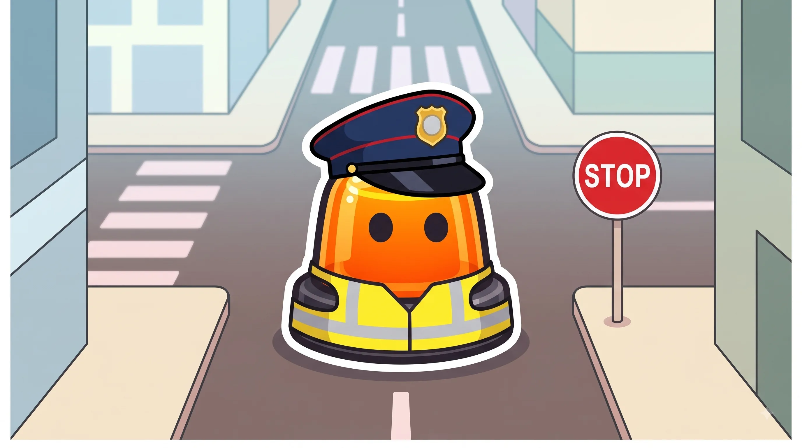
Señales verticales
La forma y el color ya te dicen el mensaje antes de leer nada.
Esquema
Triángulo, borde rojo. Avisa, no manda ni prohíbe.
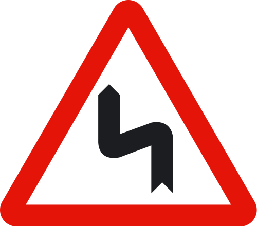
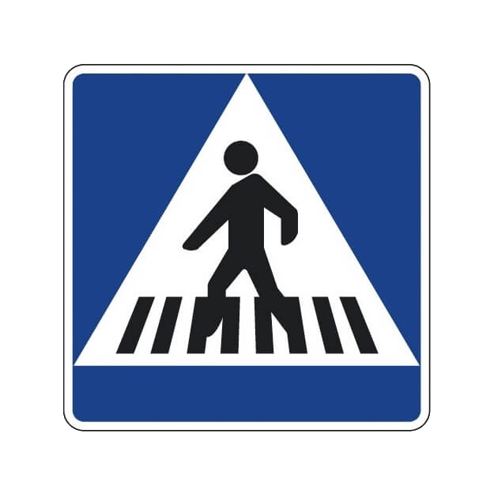
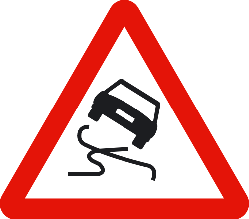
Círculo, borde rojo. Prohíbe algo desde ese punto.
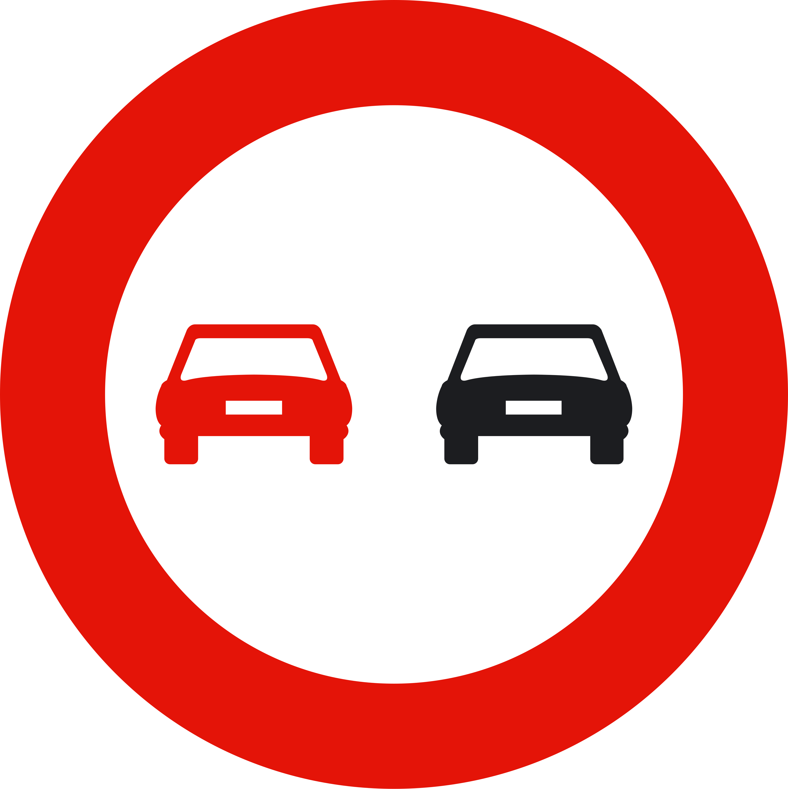

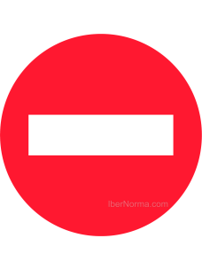
Círculo, fondo azul. Obliga a hacer algo concreto.
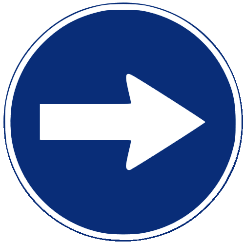
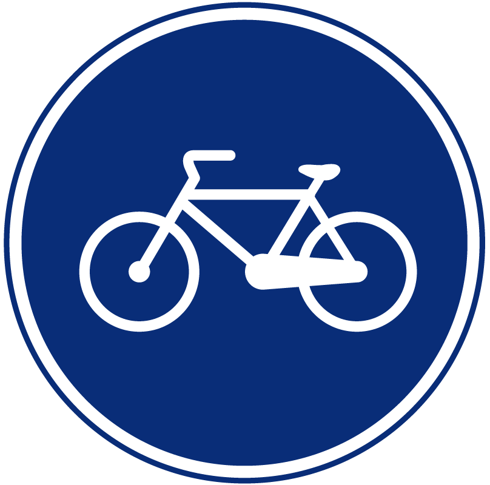
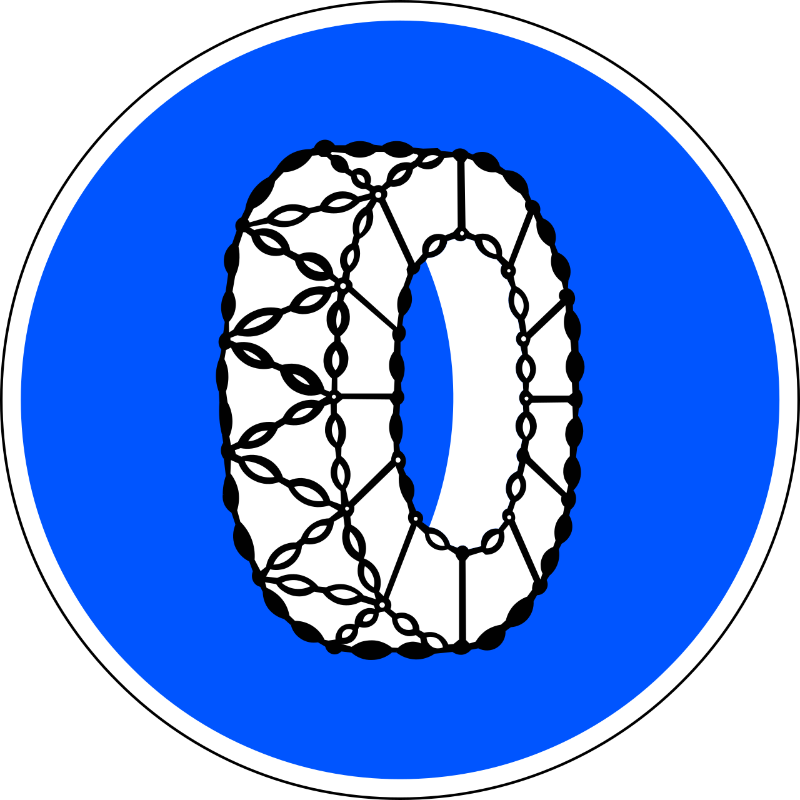
Cuadrada o rectangular. Informa, no manda ni prohíbe.
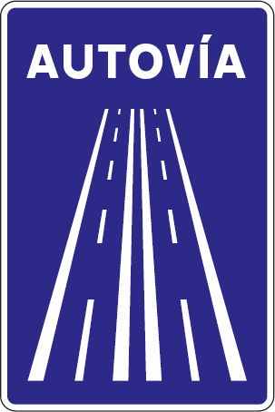
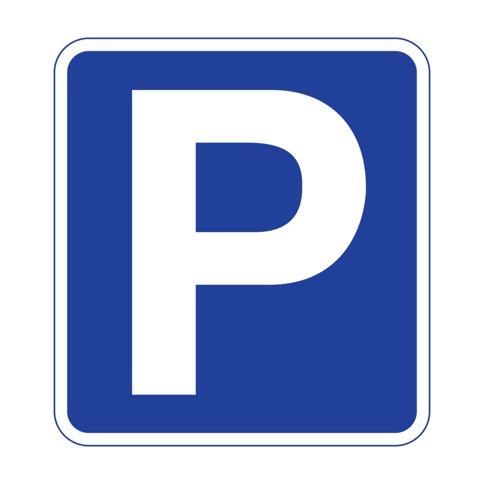
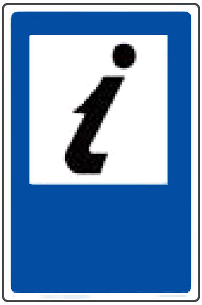
STOP vs Ceda el paso
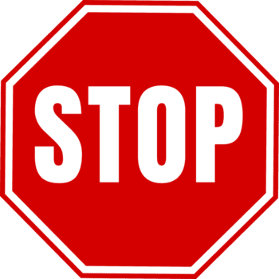
STOP
Paras SIEMPRE, aunque no venga nadie
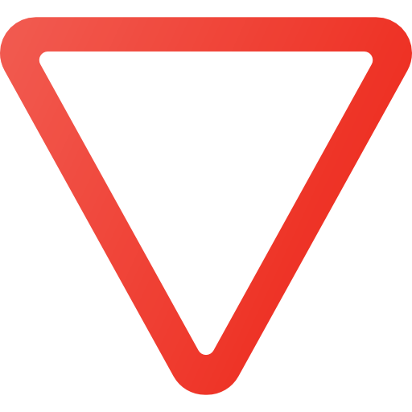
Ceda el paso
Paras SOLO si viene alguien
| STOP | Ceda el paso | |
|---|---|---|
| Forma | Octógono | Triángulo invertido |
| ¿Hay que detenerse? | Sí, siempre | Solo si viene alguien |
| Colores | Fondo rojo, letras blancas | Borde rojo, fondo blanco |
| Si no lo respetas | Infracción grave, aunque esté vacía | Infracción solo si obligas a otro a maniobrar |
Trucos para no olvidarlo
Esquinas avisan, redondas mandan.
Triángulo avisa, cuadrado informa. Los círculos siempre imponen: prohíben u obligan.
Rojo te frena, azul te mueve.
Rojo (prohibición, STOP, ceda) = parar o no hacer. Azul (obligación) = qué SÍ hacer.
El STOP no negocia.
Aunque la vía esté vacía, paras del todo antes de continuar.
Confusiones típicas
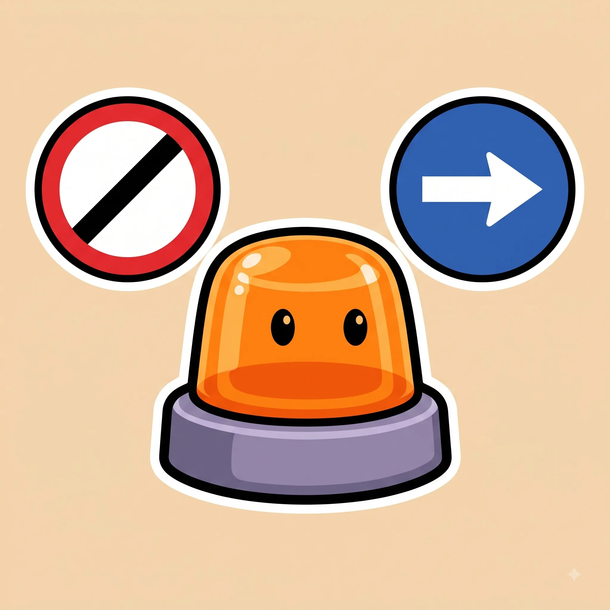
Ponte a prueba
Otros temas
Velocidad y distancias de seguridad
A más velocidad, la frenada crece mucho más rápido que la reacción.
Señales horizontales y marcas viales
Líneas, flechas y símbolos pintados en el asfalto, con su propio código.
Normas generales de circulación
Las reglas base que deciden por ti cuando no hay ninguna señal.
Adelantamientos
Cuándo, cómo y dónde se puede adelantar con seguridad.
Intersecciones y prioridad de paso
Quién pasa primero en cruces y glorietas.
Autopistas y autovías
Incorporaciones, carriles y normas específicas de vías rápidas.
Alcohol, drogas y fatiga
Tasas máximas y por qué te la juegas más de lo que crees.
El vehículo: mantenimiento y elementos de seguridad
Lo mínimo que debes revisar antes de coger el coche.
Accidentes: actuación y primeros auxilios
Proteger, avisar y socorrer, en ese orden.
Sanciones y puntos del carnet
Cómo funciona el sistema de puntos y qué te los quita.
Casos especiales: ciclistas, peatones, animales y meteorología
Las situaciones que no siguen la norma "de manual".